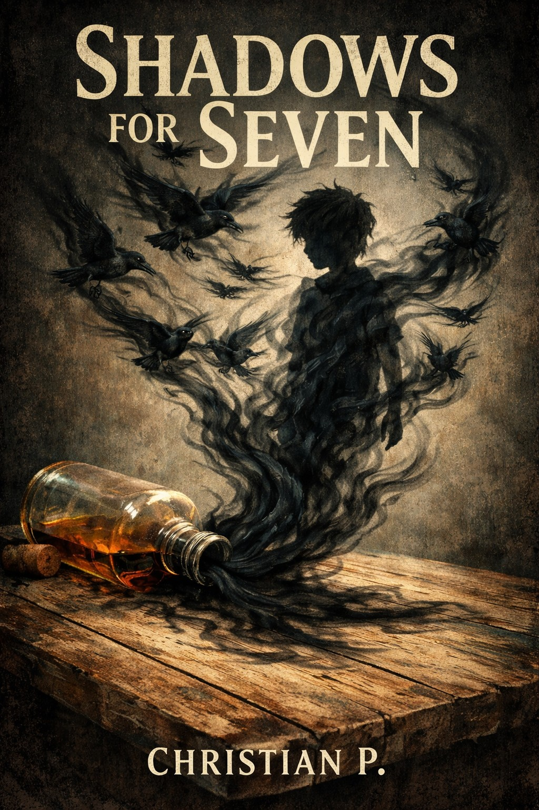

You followed the ravens
The Emborogi Archive
A living record of shadow, memory, grief, wonder, and the lives that gather around Seven.

01
The Chronicle
Synopsis, updates, and the road to publication.02
Seven
Blindfold, ravens, shadow, and the boy the light forgot.03
Aleister
The Bloodstone name, the bottle, and the burden of memory.04
Muffin
Small wings, bright trouble, and a spark in the dark.05
Emborogi
Light, shadow, kingdoms, roads, and forgotten places.06